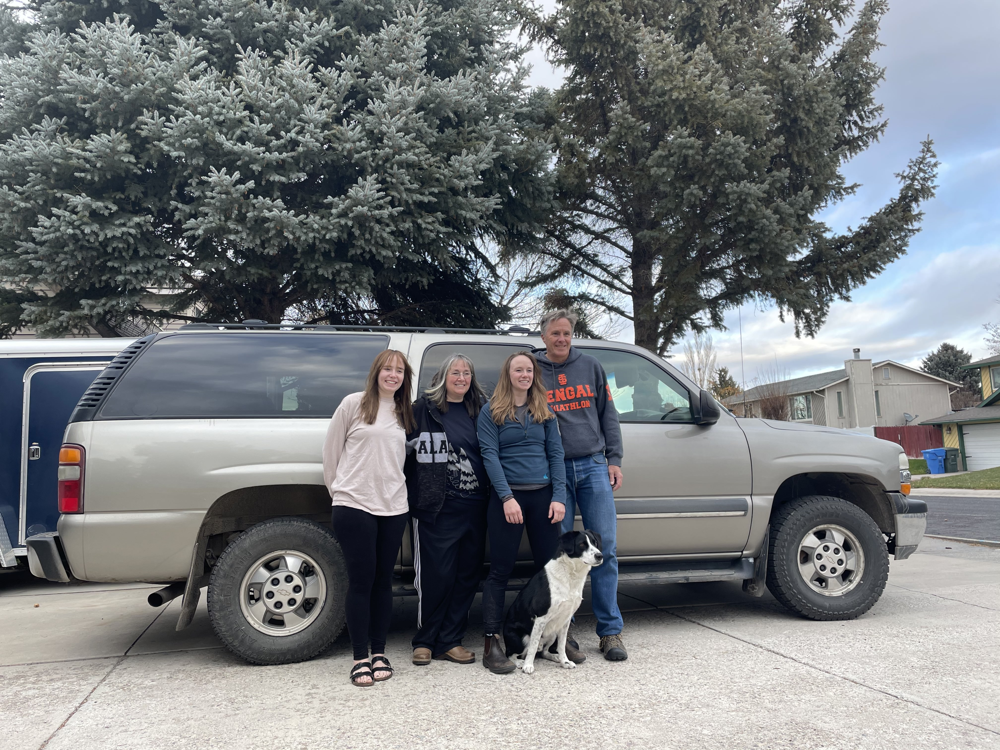
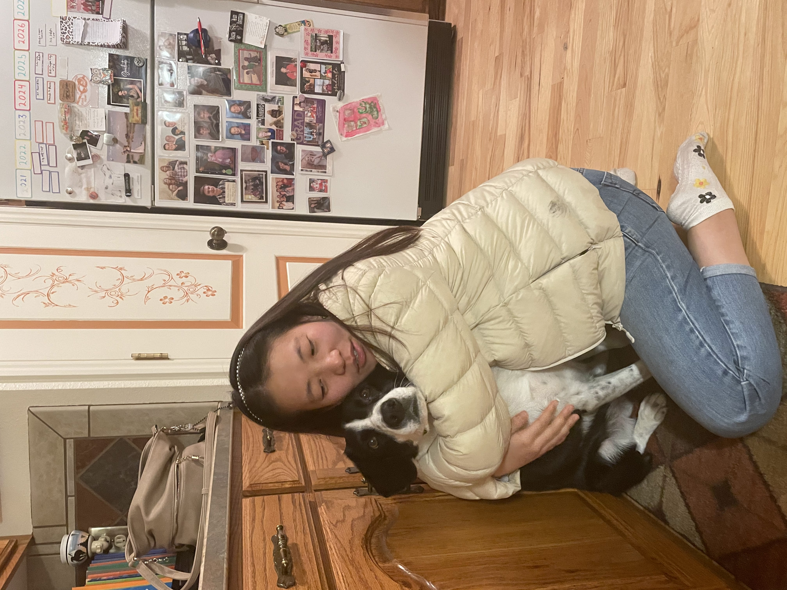

2021's Thanksgiving day in Pocatello
Photo wall


My thoughts
We are very thankful that Amanda took us to her parents' house in Pocatello, we see her mom Sherry,dad Joe, sister Aubrey. and the most lovely guy Ruscol！ we stayed two nights in sister Aubery's room. There are a lot of chinese style decorations, like a chinese tiger paint with a word 'long distance miss', a dagger, a coin in Tang dynesty, and a Tai Chi diagram. very interesting! I believe even in a Chinese person's room, there will not be so much. The house was so sweet that there are so many photos and hand-makes and plants.
The second day is thanksgiving day. A lot of relatives came. I like her aunts most, because she is the first person to hug us lol. And we had a happy night watching movie 'Grease', enjoying the dirty dance and hilarious songs. The third day, we went to the hill to dig a christmas tree. It was definitely impressive. After Joe got the permit, we drived to the Deep mountain and old forest, and to find the 'lucky guy'. Ruscol had so much fun. When we took off, he was so excited to sit in his seat. After arrived, he ran crazily. Finally, we chose a triple branched unique tree and took it home. Then we know that Amanda's parents want to change their 20 year's car, although it looks nice. And suprisely, Joe was a fan and sports man in marathon and iranman, having got so many medals. Time to farewell, we hug each other and yeah, it was such a good memory!